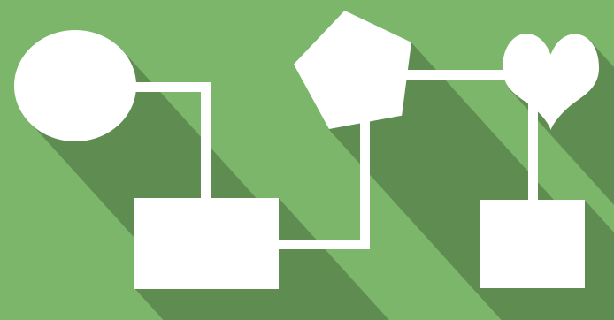

<!-- The table that follows shows the possible values of theshape attribute. 
===============================================================================================
Value             Shape Created
===============================================================================================
default           === The whole of the image not defined in an area (should be specified last)
rectangle orrect  === Rectangle
polygon or poly   === Polygon
circle or circ    === Circle
===============================================================================================


-->



 <map name="gallery">

 <area shape="circle" coords="59,93,144" href="index.html" target="_self" alt="circle" >
 
 <area shape="rect" coords="325,224,488,286" href="index.html" target="_self" alt="rect"/>

 <area shape="poly" coords="272,79,351,79,351,15,486,15,486,218,272,218,292,166,292,136x,270,76" href="index.html" target="_self"
 alt="poly"/>

 <area shape="poly" coords="272,79,351,79,351,15,486,15,486,218,272,218,292,166,292,136x,270,76" href="index.html" target="_self"
 alt="poly"/>

 <area shape="rect" coords="325,224,488,286" href="index.html" target="_self" alt="rect"/>
 
</map>